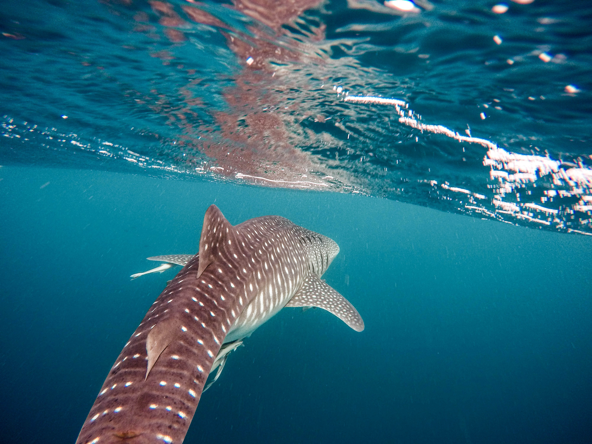
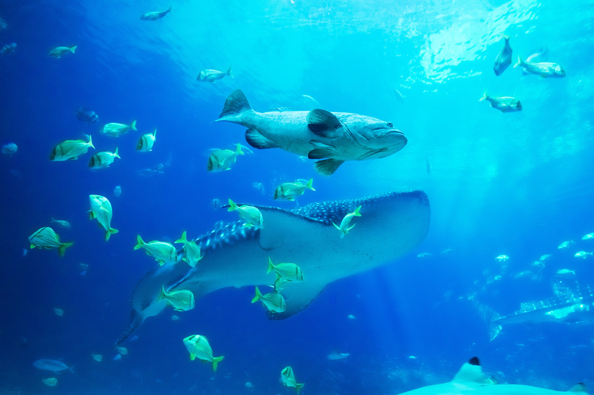
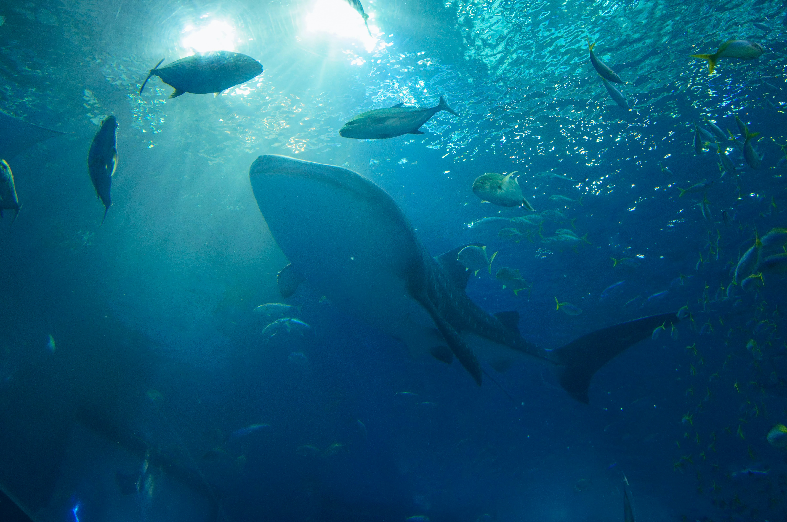
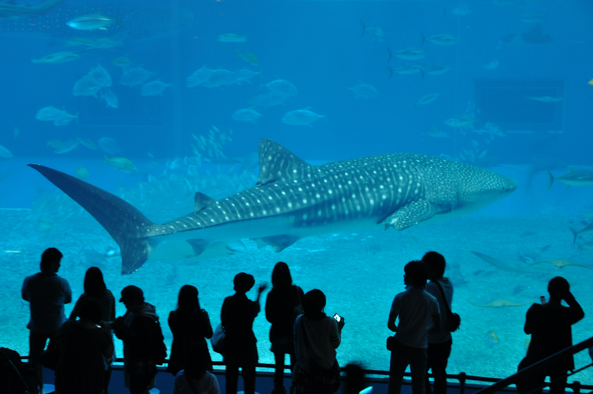
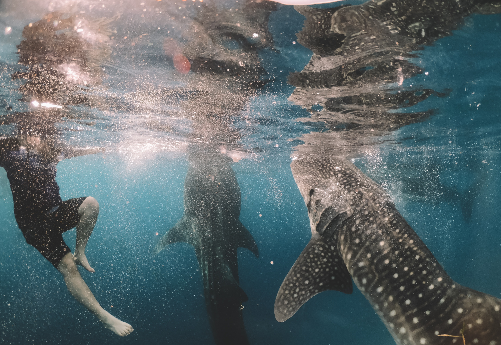
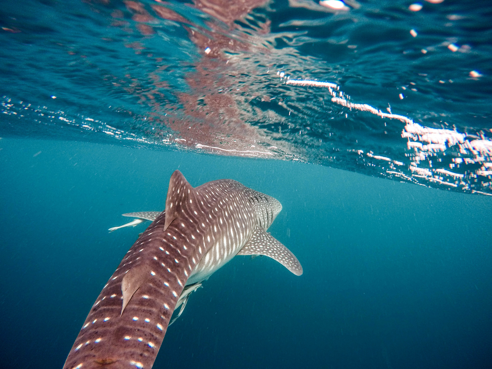
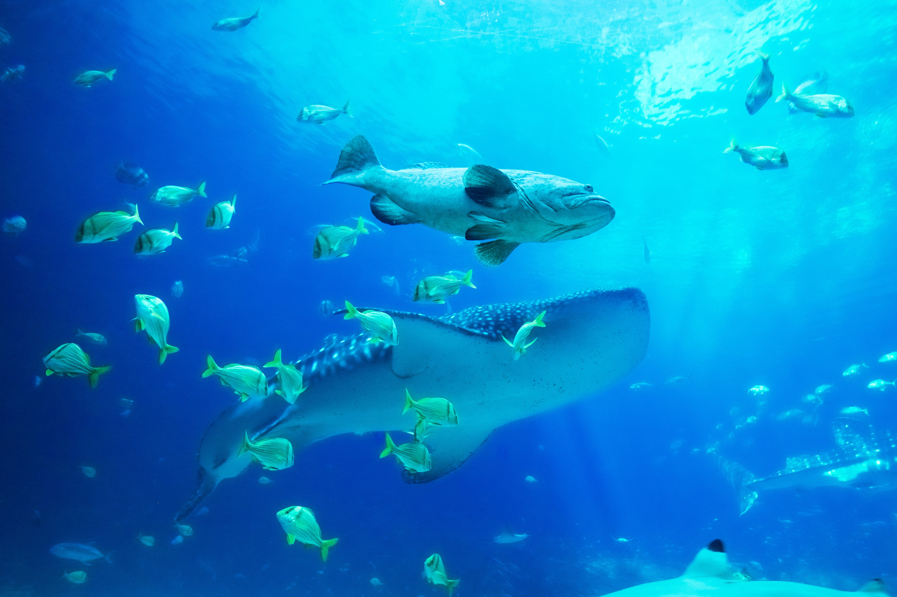
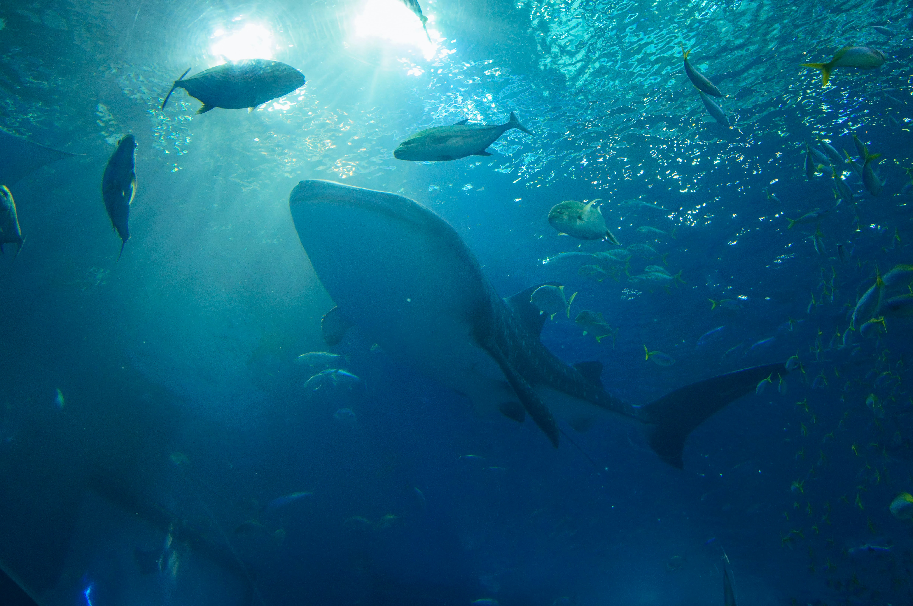
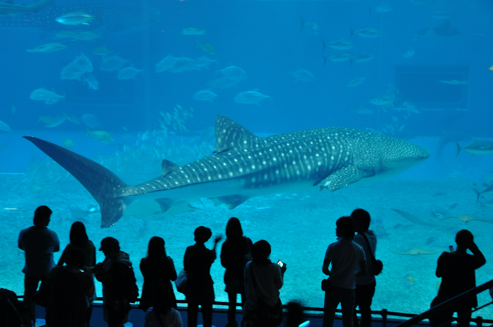
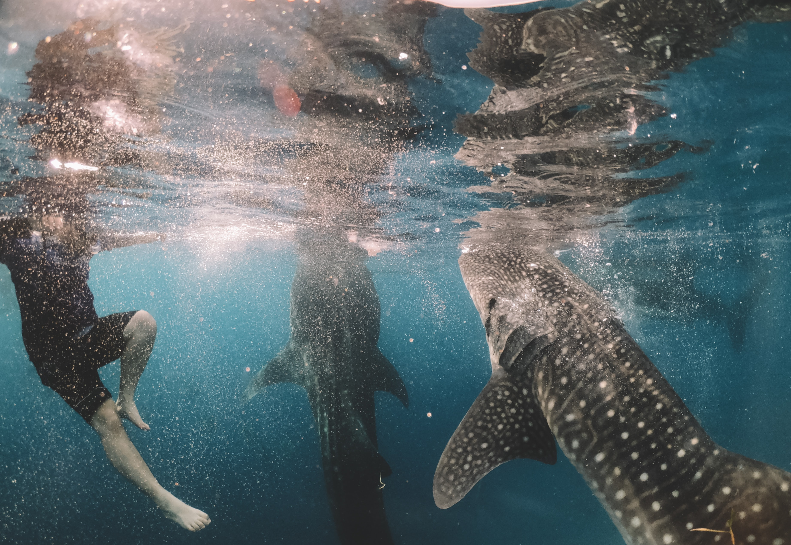

About the Whale Shark

The whale shark is a slow-moving, filter-feeding carpet shark and the largest known extant fish species. The largest confirmed individual had a length of 18.8 m. The whale shark holds many records for size in the animal kingdom, most notably being by far the largest living nonmammalian vertebrate.
Whale sharks (Rhincodon typus) are the largest shark, and indeed largest of any fishes alive today. They feed on plankton and travel large distances to find enough food to sustain their huge size, and to reproduce. Whale sharks are found in all the tropical oceans of the world. Their white spotted colouration makes these gentle giants easy to distinguish, and popular with snorkelers and divers at sites where they aggregate off the coast.
The whale shark's flattened head sports a blunt snout above its mouth with short barbels protruding from its nostrils. Its back and sides are gray to brown with white spots among pale vertical and horizontal stripes, and its belly is white. Its two dorsal fins are set rearward on its body, which ends in a large dual-lobbed caudal fin (or tail).
 








